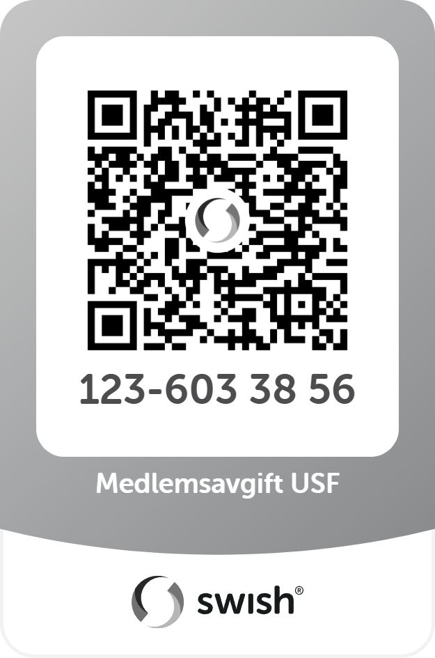

Bli medlem
Gå med i Uplands Spelmansförbund och bli del av en levande tradition
Medlemsavgifter 2026
| Kategori | Avgift |
|---|---|
| Vuxen, papperstidning | 400 kr |
| Vuxen, PDF-tidning | 300 kr |
| Ungdom t.o.m. 25 år, papperstidning | 150 kr |
| Ungdom t.o.m. 25 år, PDF-tidning | 80 kr |
Betalning
Betala medlemsavgift
Ange ditt namn och e-postadress vid betalning.

Frågor om medlemskap?
Kontakta vår kassör på kassor@uplandsspel.se för frågor om medlemskap och avgifter.
Medlemsförmåner
Som medlem i USF får du tillgång till en rad förmåner och aktiviteter
Tidningen Uplandsspelmannen
Förbundets egen tidning med nyheter, reportage, noter och spelmansinformation. Läs digitalt →
SSR-tidningen Spelmannen
Riksförbundets tidning Spelmannen utkommer 4 gånger per år med nyheter från hela spelmansrörelsen i Sverige.
Instrumentförsäkring
Genom medlemskapet kan du teckna förmånlig instrumentförsäkring via Folksam för ditt instrument. Läs mer →
Aktiviteter
Året runt erbjuder vi aktiviteter för alla folkmusikintresserade
Spelträffar
Varannan tisdag, udda veckor, träffas vi på Ringhem i Uppsala kl 13:00–15:30 för gemensamt musicerande. Alla nivåer välkomna!
Disastämman
Vår egen spelstämma som samlar spelmän från Uppland och grannlandskapen för en dag fylld av musik och gemenskap.
Oktoberstämman
En av Sveriges äldsta och mest ansedda spelmansstämmor. Varje höst samlas spelmän från hela landet i Uppsala.
ULV-stöd
Förbundet stödjer lokala initiativ och aktiviteter genom det uppländska folkmusiklivet.